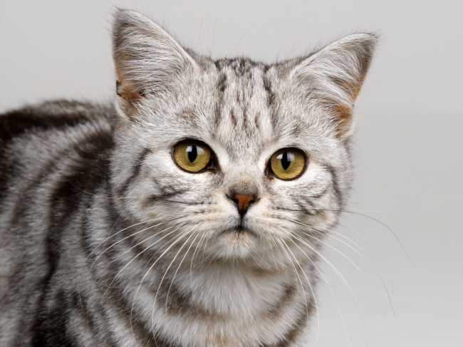
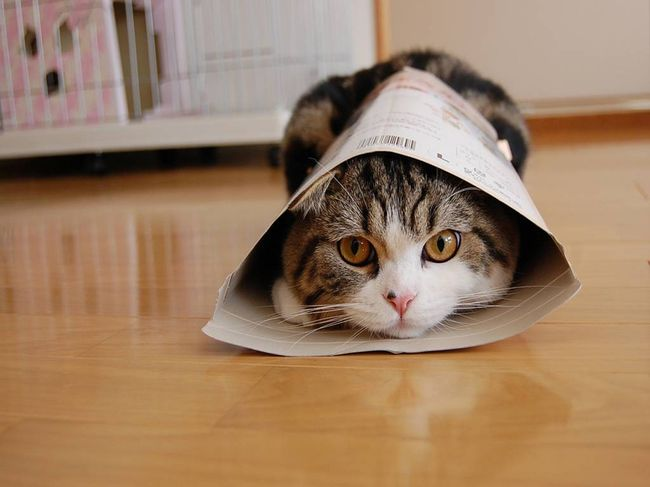

-

Черняк
Возраст: 24 луны
Порода: хитрючая
Болезни: нет
Статус: ищет хозяина
Примечание: на данный момент опять куда-то сбежал
Независимый кот, который откроет любую дверь, лишь бы выйти на свободу. Всегда возвращается через неопределенный срок (один раз вернулся через месяц).
-

Песчаная Буря
Возраст: 50 лун
Порода: хитрючая
Болезни: нет
Статус: ищет хозяина
Несмотря на возраст очень активная. Очень удивляет своими хитрыми уловками. Идеальна для съемок смешных видео на YouTube.
-

Огнегрив
Возраст: 100 лун
Порода: геройская
Болезни: нет
Статус: ищет хозяина
Этот кот всегда будет стоять за справедливость. Он очень воинственен, всегда защитит своего хозяина и свой дом. Но все-таки это не собака, а кот, поэтому не забывайте, что он спит по 12 часов в день.
-

Крутобок
Возраст: 70 лун
Порода: веселая
Болезни: нет
Статус: ищет хозяина
На фотографии он сильно стесняется, но на самом деле это очень веселый кот, любит пошутить, очень смешно смеется (да, он умеет!). Настоящий здоровяк, весит 10 кг.
-

Бабочка
Возраст: 20 лун
Порода: таинственная
Болезни: нет
Статус: ищет хозяина
Таинственная кошечка, поражающая своими глазами. Обладает исцеляющими свойствами, достаточно больному поспать в присутствии Бабочки, как на следующий день он встает здоровым.
-

Газетка
Возраст: 6 лун
Порода: веселая
Болезни: нет
Статус: ищет хозяина
Очень забавная, постоянно шалит, и что-то нам подсказывает, что даже через много лет она останется такой же озорной. Газетка еще котеночек, но уже с характером, вполне может показать коготки.